DAPR 2010 Core Recording: go live checklist
Generated 2026-09-16. Open this from disk and reload it. The image cards turn green as files land in their folders.
Not ready to upload
Three things block it, and none of them are in the cartridge. They are all on your side. Nothing here is a rebuild; it is a push, a sync, and 18 image files.
What blocks the upload
B1Push the repo
8 commits are sitting local. Every image URL in the cartridge returns 404 until this runs, including the 17 figures pulled from your own manuals.
If it fails, read the error rather than the notification. The remote is now SSH. Revert to HTTPS with git remote set-url origin https://github.com/uvu-dapr/Canvas.git if your keychain was doing the authenticating.
B2Run the Cloudflare R2 sync
All 36 Cloudflare URLs return 404. That is every handout, every deck and every manual download across all 20 modules. The files are staged in Dropbox under the correct names, character for character. Only the sync is missing.
Keyboard Maestro macro: Sync Dropbox to R2.
B3Finish the images
12 ChatGPT prompts and 6 photographs. The list is below and it fills in live.
Prompts are in ChatGPT Image Creation - DAPR 2010.md, in this same folder. Shot details are on the capture sheet, also in this folder.
Still to generate in ChatGPT: 12
Prompts are in ChatGPT Image Creation - DAPR 2010.md, in this same folder. One prompt per message.
Image 21. Spaced stereo arrays
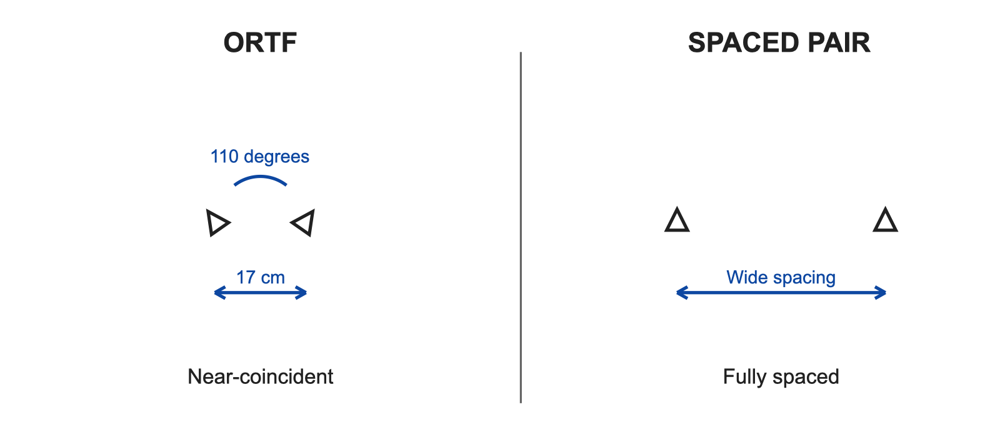
not saved yet../miking-techniques/miking-techniques-spaced-arrays-01.png
Image 22. Reflection, absorption, diffusion
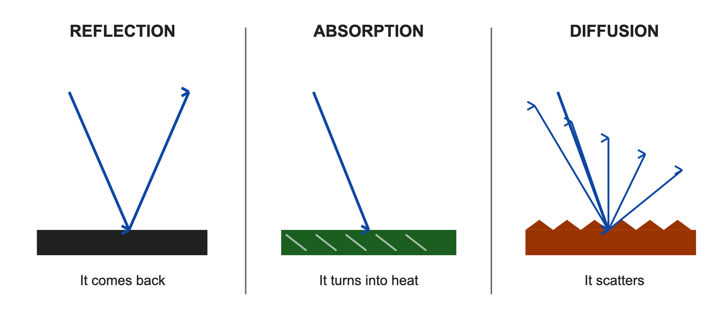
not saved yet../acoustics/acoustics-reflection-absorption-diffusion-01.png
Image 23. Early reflections
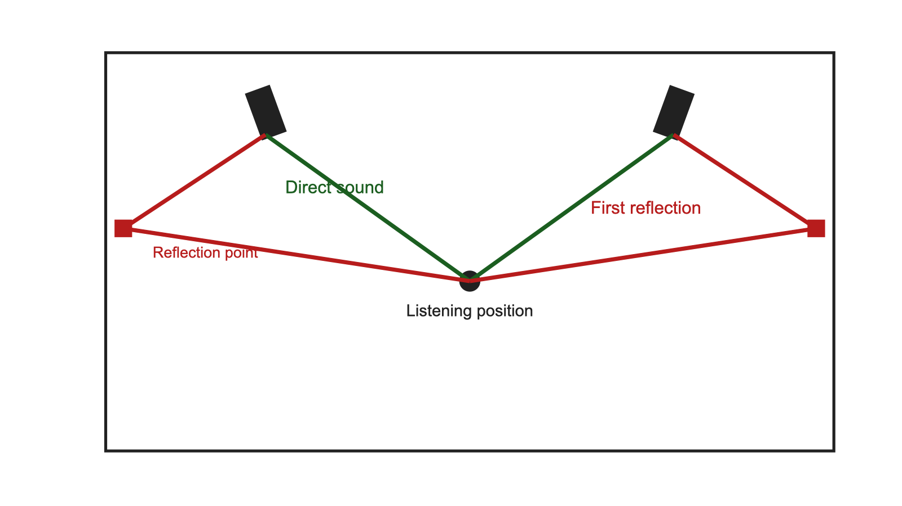
not saved yet../acoustics/acoustics-early-reflections-01.png
Image 24. Standing waves
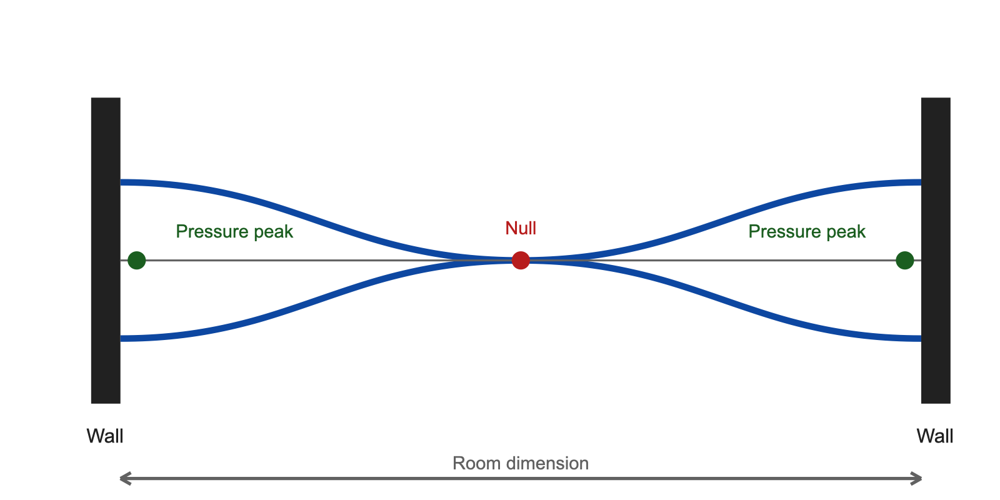
not saved yet../acoustics/acoustics-standing-waves-modes-01.png
Image 25. Drum microphone placement
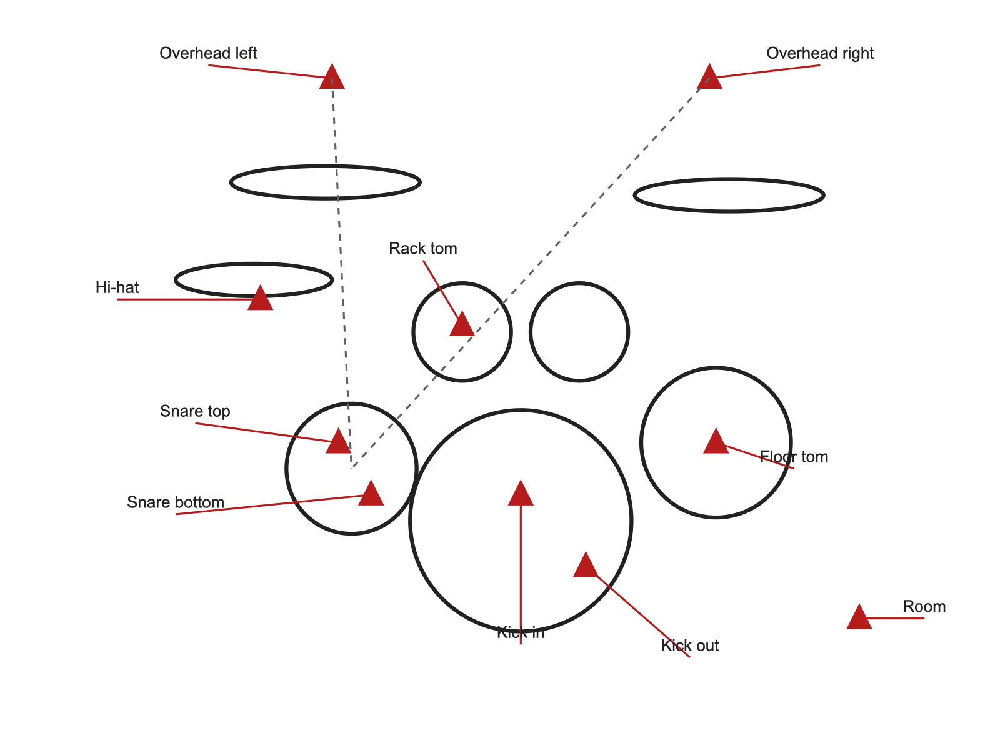
not saved yet../drums/drums-microphone-placement-01.png
Image 26. Overhead techniques
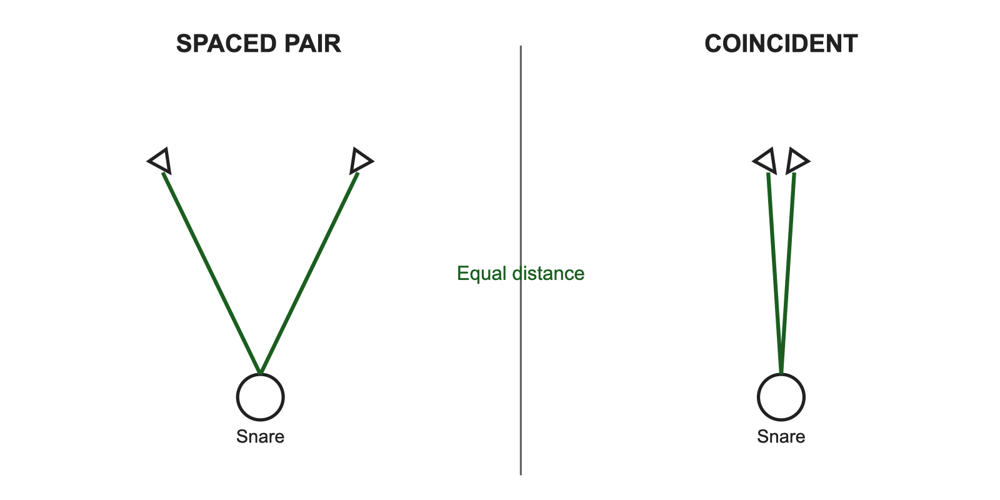
not saved yet../drums/drums-overhead-techniques-01.png
Image 27. Speaker cone positions
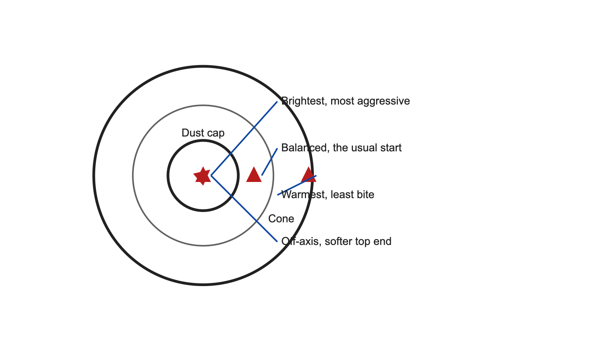
not saved yet../guitar-bass/guitar-bass-speaker-cone-positions-01.png
Image 28. DI and amp blend
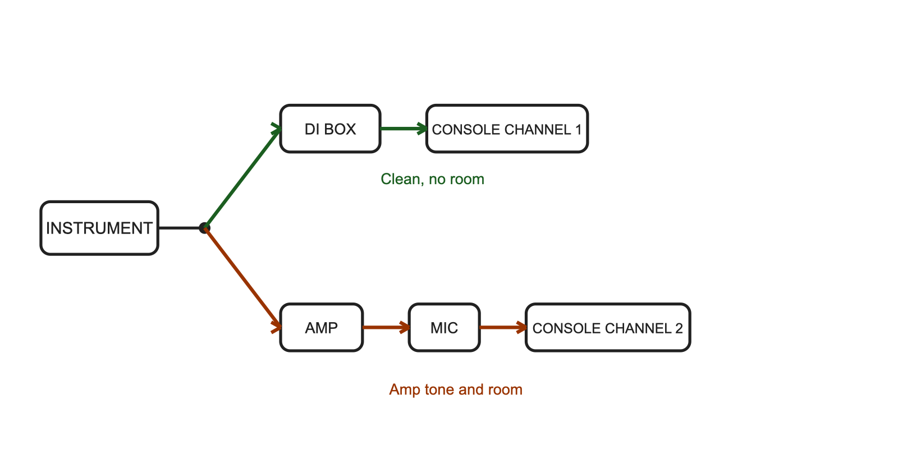
not saved yet../guitar-bass/guitar-bass-di-and-amp-blend-01.png
Image 29. Vocal chain and setup
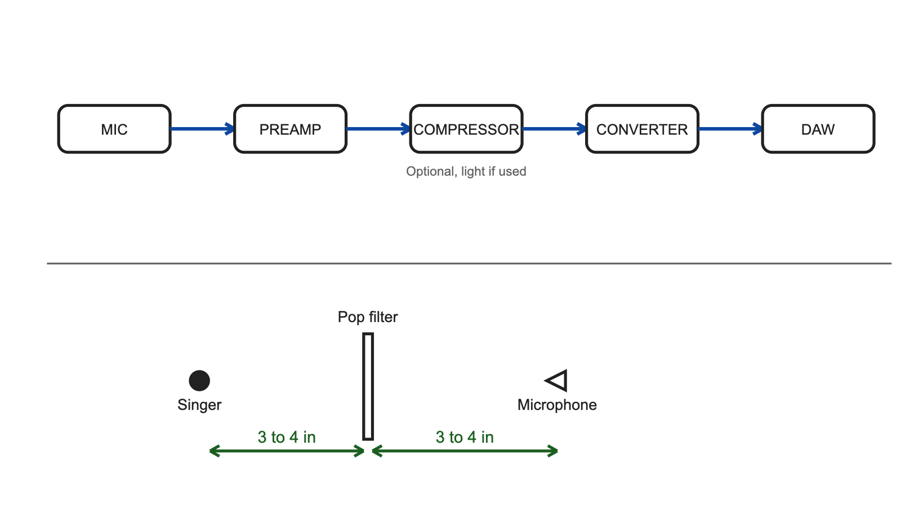
not saved yet../vocals/vocals-recording-chain-01.png
Image 30. Comping from playlists
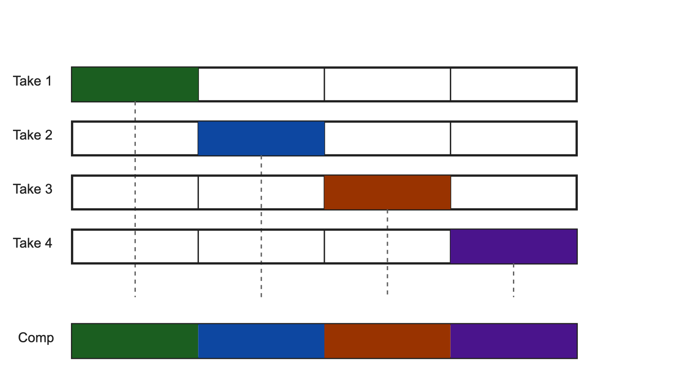
not saved yet../vocals/vocals-comping-playlists-01.png
Image 31. Where the money goes
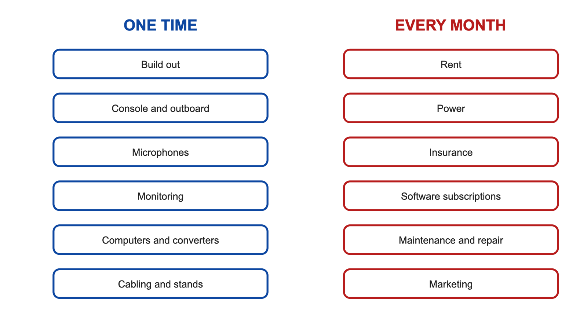
not saved yet../studio-business/studio-business-cost-breakdown-01.png
Image 32. Rate structures
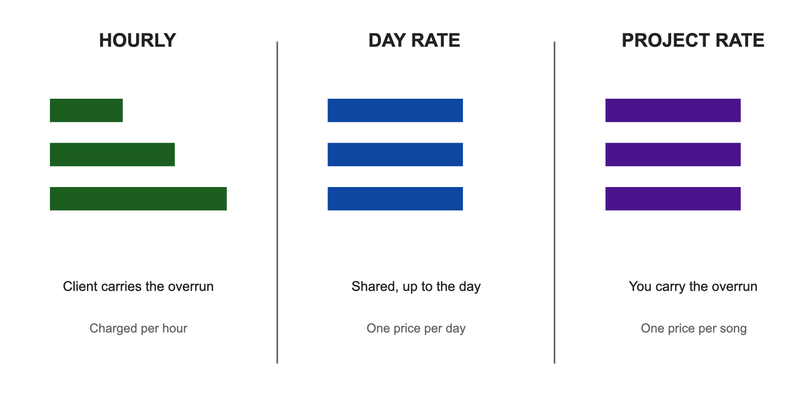
not saved yet../studio-business/studio-business-rate-structures-01.png
Still to photograph: 6
Full shot details are on the capture sheet in this folder. Nothing here exists in any manual, which is why it needs a camera.
Card 01. Studio B patchbay as installed
 not saved yet
not saved yet../patch-bays/patch-bays-studio-b-bay-installed-01.png
Card 02. Studio B control room
 not saved yet
not saved yet../studio-care/studio-care-control-room-01.png
Card 03. Studio B live room
 not saved yet
not saved yet../studio-care/studio-care-live-room-01.png
Card 04. Course tracking template in Pro Tools
../tracking/tracking-course-template-session-01.png
Card 05. Cue station in the live room
 not saved yet
not saved yet../console-operation/console-operation-cue-station-01.png
Card 06. The mic locker
 not saved yet
not saved yet../microphones/microphones-mic-locker-01.png
What happens when all of this is green
Tell me, and v8 ships
The generator already carries all 55 figures with their alt text, captions and placement points. It drops any figure whose file is not live, which is why v7 has one image in it. Once the push lands and the folders are full, one rebuild places every figure, re-verifies all 55 URLs plus the 36 Cloudflare links, and hands you the cartridge.
Roughly ten minutes of my time. No decisions needed from you.
Open rulings, none of which block the upload
These are yours to decide, not mine. Listed so v8 does not read as a clean bill of health it has not earned.
| Item | Detail |
|---|---|
| Section 7a versus 12.6 contradiction | 15 assignment pages. Which one governs. |
| What to Submit banner is module-colored, not green | 16 pages. |
| Five hex codes outside the Section 3 palette | 62 occurrences. |
| No rubric criterion names a CLO | Program-wide question, not just this course. |
| Four unsupported outcome claims | On the coverage map. |
| Attendance group is 25 percent of the grade and empty | Roll Call is yours to wire up. |
| Assignment group weights total 100.5 percent | Half a point over. |
| Folder Map hosting snapshot is stale | In the standards, not the cartridge. |
| The 16 practice quizzes | Removed under the new Section 9. One line to restore as a stated 9.0 exception if you want them back. |
| Course schedule page | Built for Spring 2027 and sitting in Claude outputs. Say the word and it goes into v8 as Orientation: 3B. |